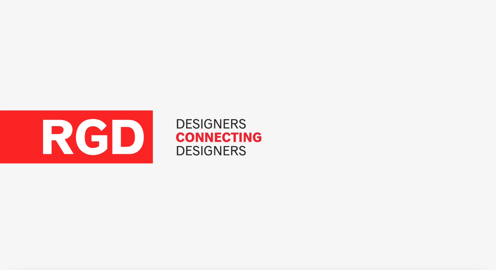
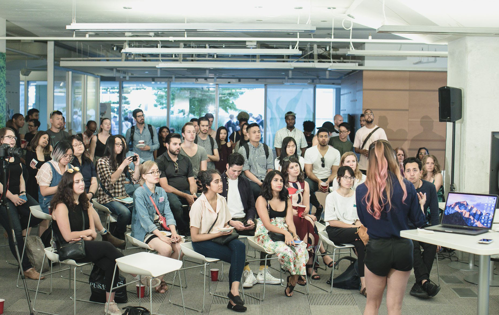
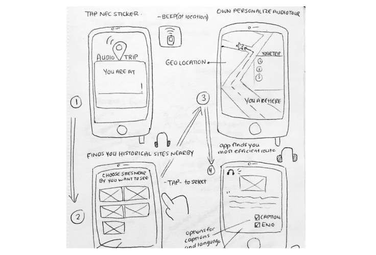
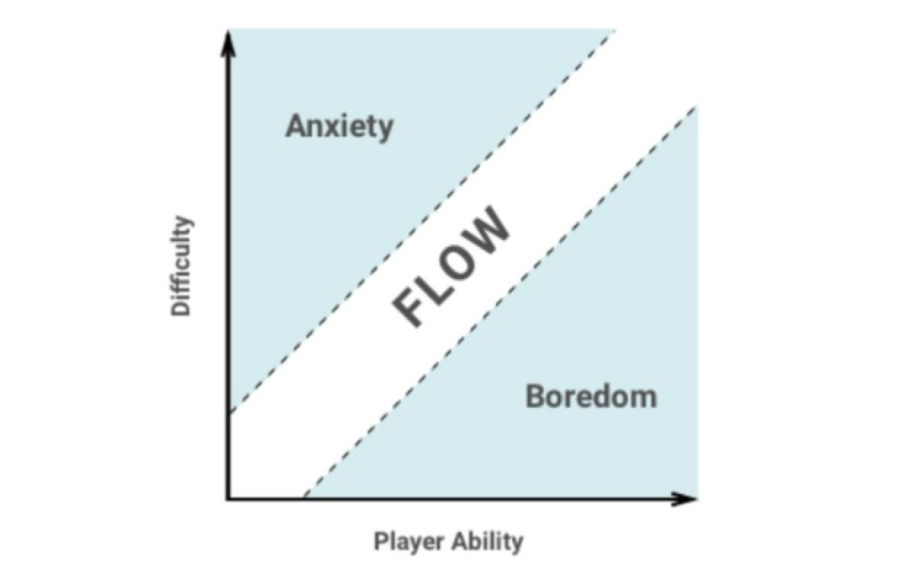
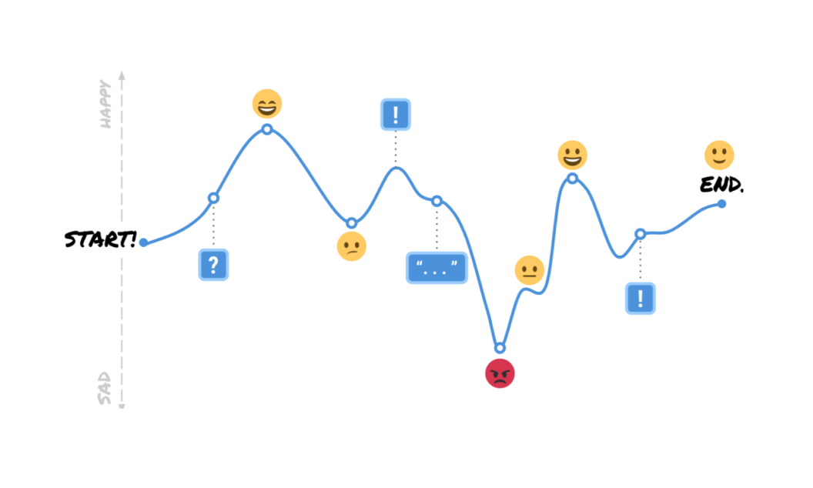
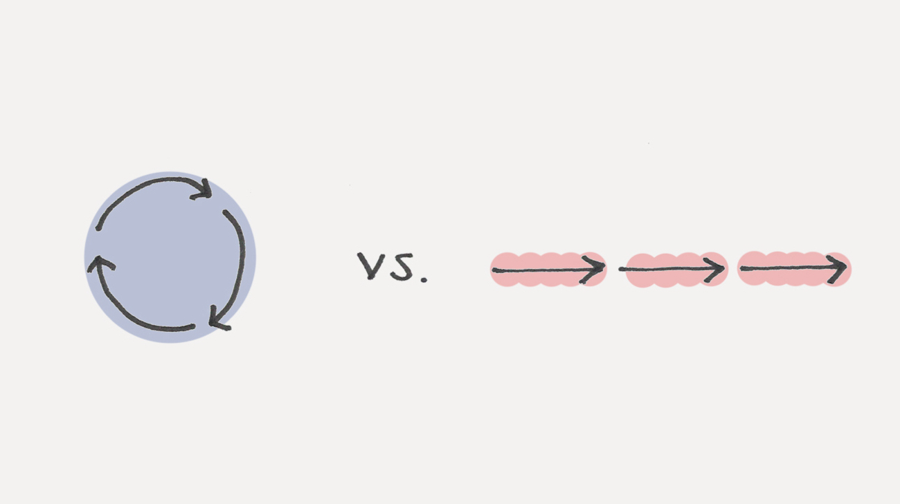

Presenting
I enjoy speaking & sharing ideas
Speaking allows me to practice being intentional. It is a skill that I truly value and hope to continue improving on.

RGD | How to choreograph better design presentations (2022)
Best practices when preparing for a design presentation. Learn about building empathy for your audience, a general structure that you can use for all presentations and things to watch out for.
View recording
A collaboration with a University of Toronto student UX group. Practical tips for each stage of the interview process from the perspective of a director, senior designer and intern.
View recording

DesignX Community | 3 Rapid prototyping exercises (2018)
An UX lightning talk based on an article I wrote called "3 rapid prototyping exercises to improve your UX skills" published in UX Collective.
View slides
Storytelling
I love writing about product
I believe that humans naturally gravitate towards stories. I enjoy crafting a narrative by putting ideas together in different ways.

Published on Medium | May 22, 2018
3 rapid prototyping exercises to improve your UX skills
This one quote I read from Hustle, really stuck to me: “Almost everybody I know who does interesting, creative work went through a phase of years where they...
Read more

Published on Medium | March 2, 2018
7 steps to achieving flow in UX design
I checked the time about 3 times today. First at 12:31pm to see how long the Monday meeting would last, the second time around 4:43pm...
Read more

Published on Medium | September 12, 2018
My aha moment as a UX Designer
When I started my career in UX, I was brought onto the task of improving our user onboarding experience. I spent quite a lot of time reading articles about this "magic moment"...
Read more
Published on Medium | April 23, 2019
How I started writing about UX
Last year, I started to explore UX writing. It was on my mind for many months prior but I kept telling myself that I didn’t have stories worth sharing....
Read more

Published on Marvel App | May 5, 2020
5 exercises to level up your design skills
My design journey started four years ago when I quit my job at a children’s sleep clinic to become a designer. I would read books about UX on my commute...
Read more
Published on Marvel App | July 12, 2020
How to tell memorable stories through sketching
By telling stories, we have the power to bring people together. Some stories, we can remember for a long time when we feel a connection to the characters...
Read more
Creativity
I love sketching visual book summaries
After listening to an audiobook, I like to challenge myself by creating a one-page visual summary. This makes reading a lot more fun and memorable!
Some favourites ✨
Atomic Habits - James Clear
Subtle Art of Not Giving a F* - Mark Manson
Sapiens: A Brief History of Humankind - Yuval Noah Harari
Shape Up - Ryan Singer
🎁 Download Printable PDF (Google Drive)